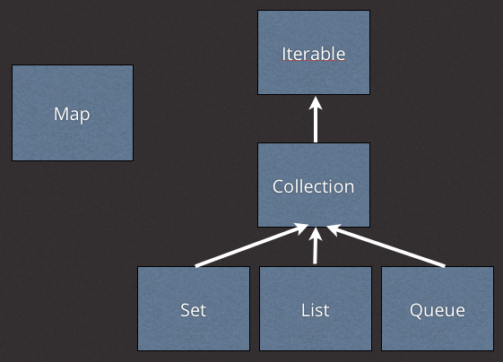
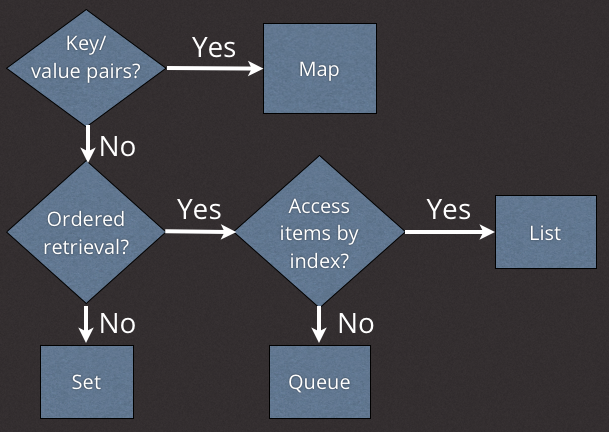

Dart 中的集合 - Dart 技巧， 第五集
文字稿
Hi! My name is Seth Ladd and welcome to Dart Tips. Fun little fact, the Dart language spec doesn’t mention the word ‘array’. Fret not, my happy Dartisans, Dart has many ways to store and retrieve collections of objects. Out of the box, Dart supports four types of collections with full-featured APIs: lists, maps, queues, and sets. Unordered, ordered, random access, or by a key, you’ll find it in the Dart core libraries. Let’s get started.

First, a bit of taxonomy. The root of Dart’s collection classes start at Iterable. An object that implements Iterable exposes read-only access to a group of items. The Collection class extends Iterable, adding the ability to add and remove items. The rubber hits the road with List, Set, and Queue, which implement Collection. You can see that Map doesn’t extend or implement Collection, but it’s an honorary member of the useful collection type classes.
We’ll talk about each collection class in turn, but let’s start at the top: Iterable! Just for illustration, here is an example of generating an iterable series of 5 numbers, zero through four.
var numbers = new Iterable.generate(5, (i) => i);
Most of the time you’ll iterate through actual collection objects, but it’s cool to know you can generate a pure iterable object.
We’re talking about iterable here, so let’s iterate! Iterable objects play nicely with for-in loops, because they can generate iterators. Here’s an example of a for-in loop using an iterable.
for (var number in numbers) {
print(number);
}
You can think of the for-in code as syntactic sugar for the this code.
for (var iter = numbers.iterator; iter.moveNext();) {
var number = iter.current;
print(number);
}
Notice how a new iterator is created, and moveNext is called for every iteration. The current value from the iterator is accessed and printed. I don’t know about you, but I find the for-in version easier to read. Still, it’s nice to know what’s happening under the hood.
An iterable object can do much more than just iterate through its items. Iterable defines very useful methods for filtering, searching, transforming, reducing, and more. Here are a few examples.
numbers.length; numbers.any((int i) => i.isEven); numbers.contains(10); numbers.where((i) => i.isOdd).toSet(); // 1, 3 numbers.map((i) => i * 2).toList(); // 0, 2, 4, 6, 8
The last two examples, where and map, illustrate iterable’s lazy application of chaining. For example, in the last example, map returns a new iterable without actually running the mapping operation. This means, the actual doubling operation doesn’t take effect until toList() is called (which actually performs the iteration and stuffs the results in a list).
There are many more methods on Iterable, and I encourage you to check out the docs to learn more. Let’s move on to some collection classes.
While the Iterable interface defines read-only behaviors on a group of items, the Collection class extends Iterable with the ability to add and remove items. List, Set, and Queue are all collections, so let’s start with List.
The list class is an ordered collection of items, with zero-based index retrieval. In other words, if you’re looking for arrays, they are masquerading as lists.
Here is some example code that uses list.
// var fruits = new List();
var fruits = ['apples', 'oranges', 'bananas'];
fruits[0]; // apples
fruits.add('pears');
fruits.length == 4;
fruits.where((f) => f.startsWith('a')).toList();
Note that you can declare lists in two ways: using the constructor from the List class, or using the square bracket literal. Remember that lists implements Collection which extend Iterable, so a list can be filtered, transformed, and more. You can see here an example of filtering the list for only items that start with the letter a.
It’s important to know that accessing an index that that is out of bounds throws a RangeError. Dart doesn’t keep on trucking, it tells you right away that something is wrong.
var fruits = ['apples', 'oranges']; // XXX: throws RangeError! fruits[3];
Keeping with an ordered theme, let’s now look at Queues. Like list, a queue is an ordered collection. Unlike list, however, a queue is optimized for addition or removal from either end of the collection. The tradeoff is that there is no index access to elements in a queue. Use a queue if you need to efficiently add or remove items from the head or tail of a collection.
A Queue in Dart can be treated like a first-in-first-out or last-in-first-out data structure.
Here is some example code that uses a queue.
// import 'dart:collection';
var workOrders = new Queue();
workOrders.addFirst('B23432');
workOrders.addFirst('J78424');
var order = workOrders.removeFirst();
workOrders.addLast('Z94093');
workOrders.removeLast();
Notice the addFirst removeFirst and addLast removeLast methods. A queue is efficient because it doesn’t allocate a new data structure when new items are added or removed from the head or tail.
Sometimes you don’t care about maintaining order, but you do care about ensuring there is one and only one item in a collection. In contrast to lists and queue, which are ordered and allow duplicate items, a Set is unordered and does not allow any duplicate items.
Here is some example code that uses a set.
var emails = new Set();
emails.add('bob@example.com');
emails.add('john@example.com');
emails.add('bob@example.com');
emails.length == 2;
var inBoth = emails.intersection(otherEmails);
Notice how the length of the set is 2 even though I called add() three times. Also of note is the intersection method, which returns a new set containing only the items that are found in this set and another collection.
Finally, let’s look at the Map class. Maps, known as dictionaries or hashmaps in other languages, contain key-value pairs. Maps associate keys to objects for easy retrieval. They are great for fast access to arbitrary objects, if you know the key. Keys must be unique, and cannot be null.
Here is some example code that uses Map.
// var accounts = new Map();
var accounts = {'bob@example.com': new Account(/* … */),
'john@example.com': new Account(/* … */)};
var account = accounts['bob@example.com'];
accounts.containsKey('alice@example.com'); // false
accounts.putIfAbsent('sally@example.com', () => loadFromDatabase('sally'));
You can see how maps work great with their literal values. Don’t be fooled, though, maps aren’t like JavaScript objects. In Dart, only objects that implement the Map interface can be treated as a Map.
Of particular note is putIfAbsent, which will call a function and insert its result only if the key does not exist in the map.
Dart ships with four main collection types: lists, queues, sets, and maps as honorable mention. Each has their own trade-offs and optimizations. To help you keep them straight, here is a handy way to look at them.

If you need key-value pairs, there is one option: Map. If you need to contain unique items, Set is your only option. This leaves the two ordered collections: List and Queue. Lists are great for arbitrary access to items anywhere in the collection, but changing their size can be costly. Queues are great if you only operate on the head or tail of the collection, but there’s no efficient way to access a specific element in the middle of the collection.
Lists, Sets, and Queues are Iterable, which means you can filter, transform, search, and chain them. You can find these collection classes and more in the dart core libraries, which are bundled in every Dart SDK and editor release. There’s a lot more functionality to these classes, we barely scratched the surface. I encourage you to dig into the API docs to learn more.
Thanks for watching, my name is Seth Ladd, and as we say here on Dart Tips, stay sharp!

非常感谢 Marakana 制作该系列短视频。